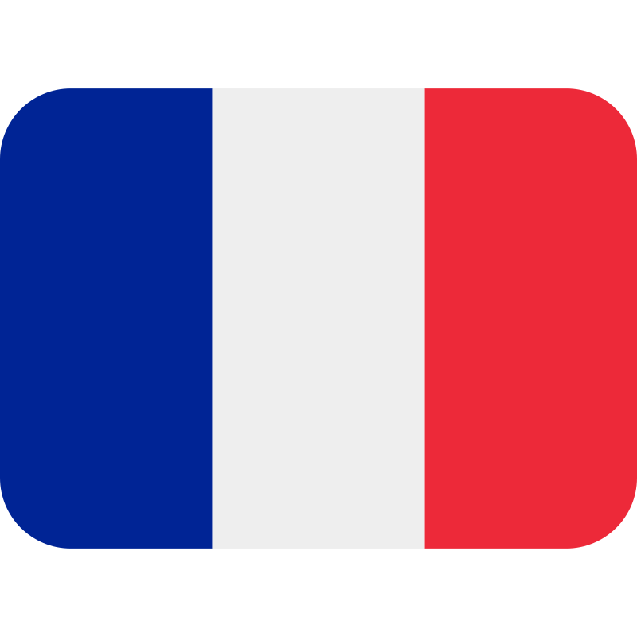

About Me
Bonjour!
My name is Jean-Marie, and I am a Software engineer from France

currently living in MunichBeyond software development, I enjoy cooking, exploring new places, and learning foreign languages — passions that reflect my curiosity and love for continuous learning.

Over the past years, I have lived and worked across three European countries, contributing to international aerospace companies such as Airbus and MTU Aero Engines.
I started my career as an aerodynamic engineer and gradually developed a strong passion for software development. This journey led me in 2017 to my current role as a Software Engineer in Methods & Tools at MTU.
In this role, I design and develop engineering applications and graphical interfaces to support analysis workflows. I focus on data processing and visualization, helping teams transform complex engineering data into meaningful insights.
My early work focused on engineering processes, algorithms, and data analysis, but I gradually became increasingly interested in frontend engineering and UI/UX design. This field sparked my curiosity and motivated me to explore modern web technologies, while offering the opportunity to create intuitive applications used by a wider range of users.
My long-term goal is to continue developing well-rounded expertise across frontend and backend development. By combining my background in enginering, data analysis and visualization with modern web technologies, I aim to contribute to the development of modern engineering tools that connect software, data visualization, and domain expertise to improve industrial processes.
My Experience

My Work Expertise

Software Engineering
I design and develop engineering applications, graphical user interfaces, and data-processing tools used in Computer-Aided Engineering (CAE) environments, particularly in CFD and thermal analysis.
My work covers the complete workflow, from data preparation and simulation support to post-processing, visualization, and user interaction. Over the years, I have evolved from a CAE user and analyst into a software developer, giving me a strong understanding of how engineering data should be presented to enable efficient and reliable decision making.
I am particularly interested in transforming complex technical workflows into intuitive software solutions that improve productivity, consistency, and user experience.

Work style and approach
I work closely with end users to understand their challenges, define requirements, and translate them into practical software solutions.
My preferred development process is iterative and highly collaborative:
- - gather requirements and understand user workflows
- - rapidly prototype ideas and validate them with users
- - refine the solution through continuous feedback and testing
- - deliver maintainable and well-documented software
From a technical perspective, I place strong emphasis on:
- - modular and maintainable architectures
- - reusable software components
- - clear separation of concerns
- - testing
- - software quality
- - documentation and long-term maintainability

Tech Stack and Tools
Programming & Scripting: Python, bash
Desktop & Web Development: PyQt, React, Flask
Data Processing & Analysis: NumPy, Pandas, Jupyter Notebook
Data Visualization: PyQtGraph, Plotly, Matplotib, Apache ECharts
Development Tools: VS Code, PyCharm, Git, Bitbucket

Professional Strengths
User-focused: Enjoy transforming complex engineering challenges into intuitive software solutions
Collaborative: experienced working across multidisciplinary teams and connecting engineering, software, and business needs
Continuous learner: curious, proactive, and constantly exploring new technologies and development practices
Multilingual: daily work experience in German, English, and French
Passion for Web Applications
Tech Stack and Tools
Programming: Python, Javascript, Typescript
Frontend: Angular, React, Redux
Databases & Backend Services: MongoDB (NoSQL), SQL (SQLite), Firebase, Supabase
DBMS: NoSQL (MongoDB), SQL (SQLite)
CSS: Sass and BEM, Tailwind
UI: semanticUI, Bootstrap, MaterialUI
Data Viz: D3.js, chart.js, eCharts
UI/UX Design: Figma, Lunacy

What's next?
Backend development: C# / .NET
Modern Web Architectures: Next.js, NestJS, Django
Cloud & Deployment: Docker, Kubernetes
Advanced visualization: WebGL & Three.js

My Web Development Journey
My journey into web development began through self-directed learning and quickly evovled into building real-world applications.
I developed my first full-stack application, Linguappo, using Node.js and Express, later refactoring its architecture to improve maintainability and scalability through MVC and service-oriented design principles
While creating this porfolio website, I deepened my understanding of Sass, Flexbox, CSS Grid, prototyping, and web design. This hands-on experience taught me the value of experimentation, iteration, and continuous improvement.
Building on these foundations, I expanded into modern frontend development with React, Redux, Angular, and TypeScript, developing projects that strengthened my understanding of component-based architectures, state management, and modern web application development

Courses & Learning Resources
My Next Challenge

What I am looking for
I enjoy building software that delivers real value to its users. My ideal role would allow me to contribute to the development of modern web applications, user interfaces, dashboards, and data-driven products where usability, performance, and software quality matter
I am particularly intersted in:
- - Frontend and full-stack development
- - Data visualization and analytics
- - User-centered design and intuitive workflows
- - Software architecture, maintainability, and quality
- - Products with a clear impact on users and business outcomes
I enjoy taking ownership of a product throughout its lifecycle, from requirements gathering and design to implementation, testing, deployment, and continuous improvement
As I continue to grow professionally, I look forward to expanding my technical responsibilities, contributing to architectural decisions, mentoring others, and helping shape modern software solutions

Ideal environment
Preferred Roles: Frontend or Full-stack Engineer
Industries & Domains: industrial and engineering innovation, scientific and technical software, data analytics and visualization
Company culture: innovation and technical excellence, continuous learning and professional development, trust, autonomy and ownership
Preferred company size: Medium to large-sized organizations, technology-driven teams with close collaboration
Employment: permanent full-time position